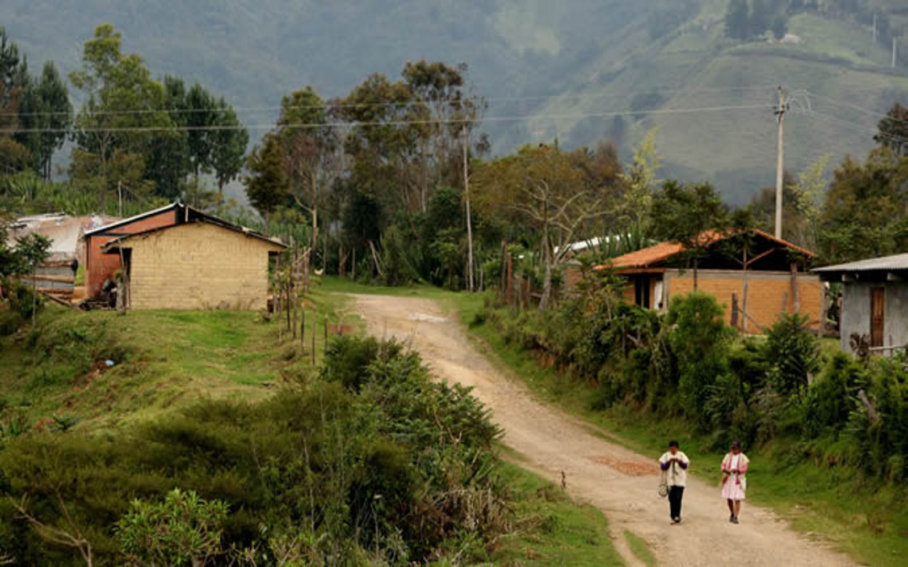
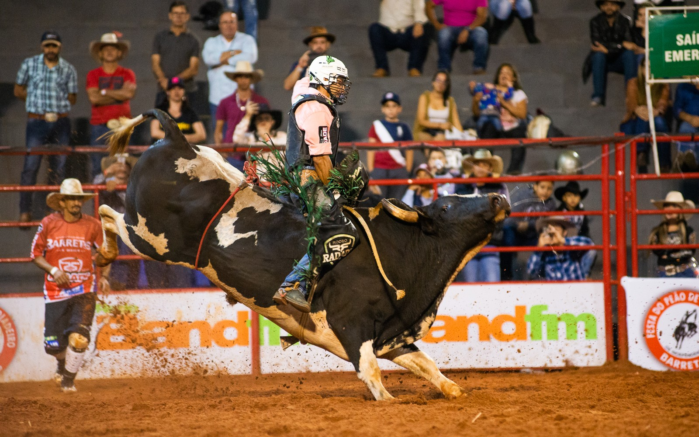
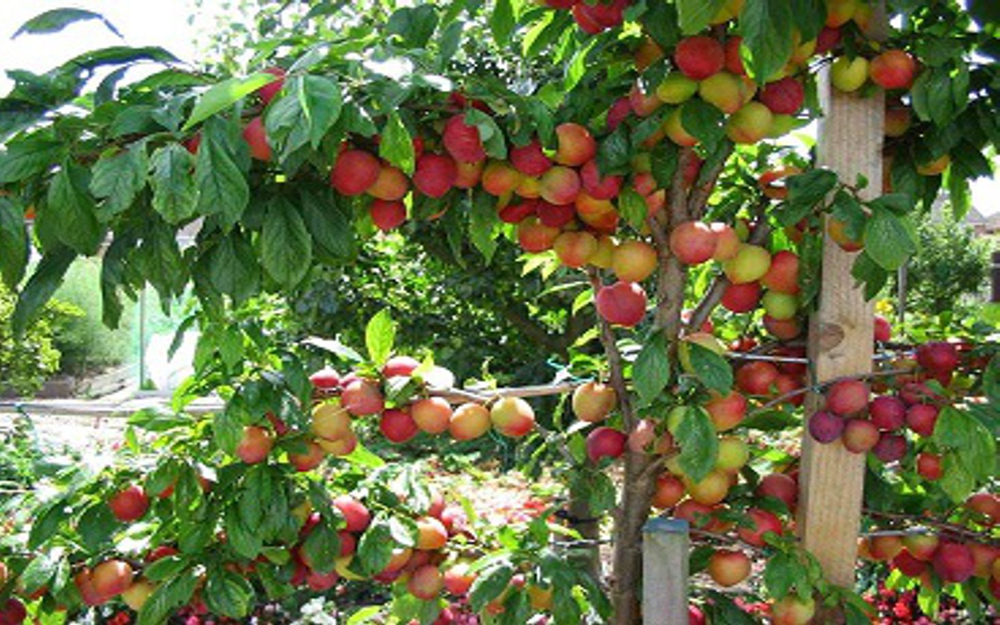
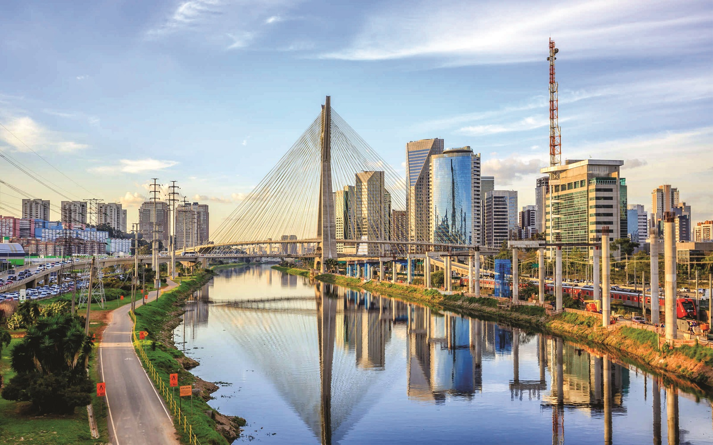
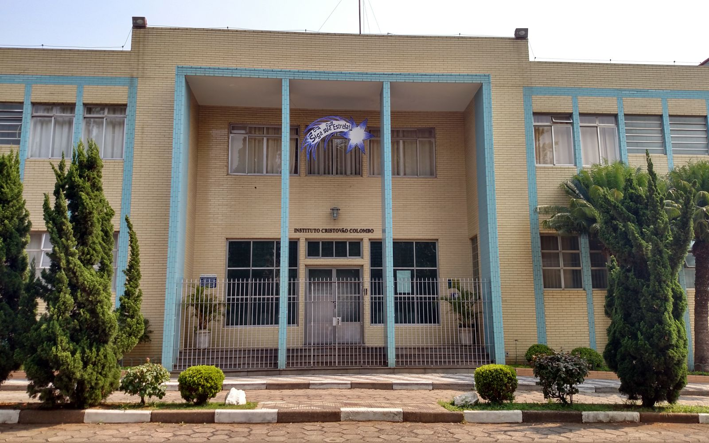

Nascido em Herculândia

Em 06/06/1987 nasce Wesley, em uma cidade muito pequena chama Herculândia - PR, na epoca considerada apenas uma região rural, muito simples e pequena, tanto que o registro de nascimento acaba sendo feito em umuarama, uma cidade vizinha.
Lembranças

Uma das poucas lembranças dessa epoca, é um rodeio que foi com seu pai e sua irmã, onde ele ganhou um oculos de sol com armação branca, e no meio do rodeio um touro fugiu e foi um caos total, correria para tudo que é lado.
Abundância mascarada

A Mãe dona Joana, relata que era um época com bastante dificuldades, mas pelo menos tinha fartura de frutas por toda a cidade. E o Wesley também tem uma memoria muito vivida, de reunir-se com os amigos juntarem em duplas e sairem com sacos, e cada um fica com a missão de pegar um tipo de manga, por exemplo.
Mudança para SP

ainda muito novo, foi para São Paulo, com sua mãe e a Irmã mais velha, a Daiane. Wesley tinha proximadamente uns 5 anos.
Colégio Interno

Pouco tempode depois de Chegar, sua mãe que é mãe solteira, conseguiu matricular Wesley em um Colégio interno, onde ele ia domingo para lá e só voltava para a casa na sexta final do dia. Foi uma época muito boa, o colégio era excelente, tinha aula duas vezes no dia, muitas áreas de lazer, e apesar de serem muito rigitos com horários as crianças se acostumavam rápido, a melhor epoca do ano era no verão, quando eles abriam a piscina todos os dias de tarde, era uma festa!
Viagem de Avião
Na 4° serie, Wesley participou de um concurso promovido pela ong Rotary Clube, onde foi um dos selecionados e ganhou um bate a e volta para o Rio de Janeiro de Avisão, coisa que nunca nem sonhava na vida que iria acontecer, andar de avião. Foi o primeiro de sua família a fazer isso, foi um momento mágico.